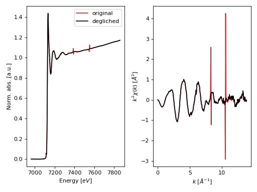

Deglitch module¶
- araucaria.xas.deglitch.deglitch(group, e_window='xas', sg_window_length=9, sg_polyorder=3, alpha=0.025, max_glitches='default', max_glitch_length=4, update=False)¶
Algorithm to deglitch a XAFS spectrum.
- Parameters
group (
Group) – Group containing the spectrum to deglitch.e_window (
Union[str,list]) – Energy window to seach for outliers. Oprions are ‘xas’, ‘xanes’ and ‘exafs’. Alternatively a list with 2 floats can be provided for the start and end energy for the search. See the Notes for further details. The default is ‘xas’.sg_window_length (
int) – Windows length for the Savitzky-Golay filter on the normalized spectrum. Must be an odd value. The default is 7.sg_polyorder (
int) – Polynomial order for the Savitzky-Golay filter on the normalized spectrum. The default is 3.alpha (
float) – Significance level for generalized ESD test for outliers. The default is 0.025.max_glitches (
Union[int,str]) – Maximum number of outliers to remove. The default is the floor division of the array length by 10.max_glitch_length (
int) – Maximum length of glitch in energy points. The default is 4.update (
bool) – Indicates if the group should be updated with the autobk attributes. The default is False.
- Return type
- Returns
Dictionary with the following arguments:
index_glitches: indices of glitches in the original energy array.energy_glitches: glitches in the original energy array.energy: deglitched energy array.mu: deglitched array. Returned ifgroup.get_mode() = 'mu'.fluo: deglitched array. Returned ifgroup.get_mode() = 'fluo'.mu_ref: deglitched array. Returned ifgroup.get_mode() = 'mu_ref'.deglitch_pars: dictionary with deglitch parameters.
- Raises
TypeError – If
groupis not a valid Group instance.AttributeError – If attribute
energydoes not exist ingroup.
Warning
Running
deglitch()withupdate=Truewill overwrite theenergyand the absorption attribute ofgroup.Notes
This function deglitches a XAFS spectrum through a two-step fitting with Savitzky-Golay filter and outlier identification with a generalized extreme Studentized deviate (ESD) test 1.
e_window='xas'considers the full spectrum for deglitching.e_window='xanes'considers the beginning of the energy array up to 150 eV above \(E_0\).e_window='exafs'considers from 150eV above \(E_0\) to the end of the energy arraye_window=[float,float]provides start and end energies in eV.
References
- 1
Wallace, S. M., Alsina, M. A., & Gaillard, J. F. (2020) “An algorithm for the automatic deglitching of x-ray absorption spectroscopy data”. arXiv preprint arXiv:2011.14467.
Example
>>> from numpy import allclose >>> from araucaria.testdata import get_testpath >>> from araucaria import Group >>> from araucaria.io import read_dnd >>> from araucaria.xas import deglitch, pre_edge, autobk >>> from araucaria.utils import check_objattrs >>> fpath = get_testpath('dnd_glitchfile.dat') >>> group = read_dnd(fpath, scan='fluo') # extracting fluo and mu_ref scans >>> cgroup = group.copy() >>> degli = deglitch(cgroup, update=True) >>> attrs = ['index_glitches', 'energy_glitches', 'deglitch_pars'] >>> check_objattrs(cgroup, Group, attrs) [True, True, True] >>> allclose(cgroup.energy_glitches, group.energy[cgroup.index_glitches]) True >>> print(cgroup.energy_glitches) [7552.2789 7548.1747 7390.512 7387.2613]
>>> # plotting original and deglitched spectrum >>> from araucaria.plot import fig_xas_template >>> import matplotlib.pyplot as plt >>> for g in [group, cgroup]: ... pre = pre_edge(g, update=True) ... autbk = autobk(g, update=True) >>> fig, ax = fig_xas_template(panels='xe') >>> line = ax[0].plot(group.energy, group.norm, label='original', color='tab:red') >>> line = ax[0].plot(cgroup.energy, cgroup.norm, label ='degliched', color='k') >>> line = ax[1].plot(group.k, group.k**2 * group.chi, color='tab:red') >>> line = ax[1].plot(cgroup.k, cgroup.k**2 * cgroup.chi, color='k') >>> leg = ax[0].legend() >>> fig.tight_layout() >>> plt.show(block=False)
(Source code, png, hires.png, pdf)

{kind=link}
{kind=link}